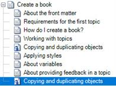

Author-it enables you to repeat existing objects in two unique ways: copying and duplicating. It is important to understand the use cases and impacts to content for each method.
Copying an object
When you make a copy of an object, you create a second instance of the object within the book structure or within two or more separate books. Each instance of the copy is linked to the other copies since all copies use the same unique object ID in the Author-it database. Use the copy method for situations when you want an exact duplicate of the information in another area of the same book or to within two or more books. Copying is one method that can be used to single-source content.
What happens when I copy an object?
When you copy an object, you create another instance of the object within the book or within two or more books. All properties and content are identical throughout instances of the copies. Any changes you make to one copy will be automatically reflected in all other instances of the copy. Since all copies share a single object ID, when you lock one of the copies in a book, all other copies are also locked in their respective books. The example below shows two instances of the same topic used in the same book that are locked for editing.

Copying an object
To copy an object, select a copy in one of the books, and do one of the following:
Right-click the topic and click Copy.
Press Ctrl+C on your keyboard.
To paste the object you have copied, select the topic above the destination for the new copy, and do one of the following:
Right-click the topic, and click Paste.
Press Ctrl+V on your keyboard.
Duplicating
There are several reasons that you might want to duplicate existing objects:
To create an object that is similar to an existing one, which is faster than setting up the object from scratch. You only need to change the content or properties that are different.
To change one instance of an object to make it different from all other instances of the same object. Because Author-it enables you to re-use objects in many places, you must duplicate the object to be able to make changes in one place independently from the original object.
What happens when I duplicate an object?
Duplicating an object creates a new copy of that object, but not copies of any objects contained in the copied object. For example, if you copy a book object, all of the objects that the copied book contains (such as embedded topics or graphics) are shared with the original book object.
Duplicating an object
To duplicate an object, you must first find the object in the folder view by using one of the following methods:
Navigate the folder view or utilize the search filters, and select the object in the folder view
If the object exists in a book, right-click the object in the book navigation and select Locate. The file object will be selected in the folder view behind the open book.
After the object is selected, in the folder view, click the Manage tab, within the Versioning grouping, click Duplicate the selected object ( ). A browse window displays for you to select the destination of the duplicate object. You can click OK without making a selection to create the duplicate object in the last location you selected in the folder view (left-side).
The object appears in the folder you selected, with the text "Copy of" inserted at the beginning of the description.